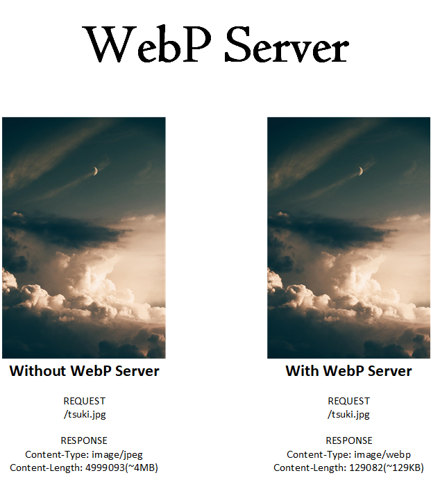

This is a Server based on Golang, which allows you to serve WebP images on the fly.
It will convert jpg,jpeg,png files by default, this can be customized by editing the config.json..
- currently supported image format: JPEG, PNG, BMP, GIF(static image for now)
e.g When you visit
https://a.com/1.jpg，it will serve asimage/webpwithout changing the URL.For Safari and Opera users, the original image will be used.
What's WebP
WebP is a modern image format that provides superior lossless and lossy compression for images on the web. Using WebP, webmasters and web developers can create smaller, richer images that make the web faster.
Current Problems with WebP
- Safari doesn't support it.
- Tons of Nginx and JavaScript works.
- It needs a tool to transfer.
- mod_pagespeed is not easy to use.
WebP Server-Go
Finally, we have WebP Server, it's..
- Single binary.
- Blazing fast...
- And of course..
- Convert your images..
- ON THE FLY